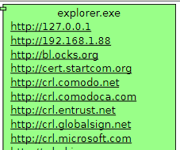
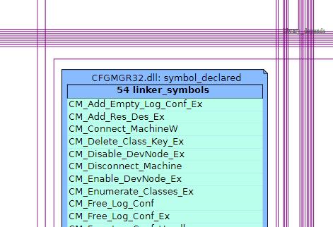

WINDOWS EXPLORER™
This scenario is done on a plain Windows machine, where the file
Explorer is always available. The goal is to grab as much informaiton
as possible about its internal behaviour. The image are taken from the
static SVG output, as it is more stable to copy/paste.
The first step is to find the process using the "Process tree" script:
http://rchateau-hp:8000/survol/sources_types/enumerate_CIM_Process.py?xid=.

Several
scripts are available. Only the scripts which can run on a Windows
machine are displayed.

Of course, the Java scripts will not be called, as Explorer is written
only in C. Still, a C process could call Java libraries, therefore in
some tituations these scripts are usable.
Let's have a look to the HTTP urls this process contains:

The script displaying sockets do not return anything.
On the other hand, the list of memory mapped -files is really huge; It
would be nice to display them in a list instead of a graph. Several of
them related to TortoiseSVN and TortoiseGIT:
It is not uninteresting to see that this DLL is opened by several
processes. But why does Snipping Tool accesses this DLL ? This can only
be an indirect load because it is not part of the static dependency of
this executable.

Back to Windows Explorer. Whcih file does it open ? Unsurprisingly,
cache files containing icons:
 Without too much
surprises, we can see the file names which are contained in the memory
process. We can find the files which are currently being displayed and,
of courses, their names appear in the heap. What is more interesting is
that they apprently are not stored in a process cache, but simply
resides in the operating system memory.
Without too much
surprises, we can see the file names which are contained in the memory
process. We can find the files which are currently being displayed and,
of courses, their names appear in the heap. What is more interesting is
that they apprently are not stored in a process cache, but simply
resides in the operating system memory.
Let's have a look at the executable file itself:
Explorer.exe contains several icons ...
There is also a script which displays the complete graph of DLLs and
imported symbols. This is quite heavy but is exhausite, and for example
shows that the Tortoise library can only have been loaded dynamically:

Return to Survol, or see more use cases, or Doxygen-generated pages here.